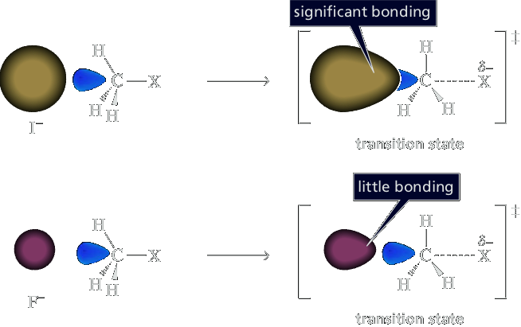
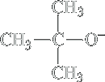

Nucleophilicity
Nucleophilicity is a kinetic property and is measured by relative rates of reaction. Relative nucleophilicities for a series of nucleophiles are established by measuring the rate at which each displaces a leaving group from a haloalkane; for instance, the rate at which each nucleophile displaces bromide ion from bromoethane in ethanol at 25°C.
| Nu:− + CH3Br ⟶ CH3Nu + Br− | ||||
|---|---|---|---|---|
| Nucleophile | Product | Relative rate of reaction | ||
| Formula | Name | Formula | Name | |
| H2O | Water | CH3OH2+ | Methylhydronium ion | 1 |
| CH3CO2− | Acetate | CH3CO2CH3 | Methyl acetate | 500 |
| NH3 | Ammonia | CH3NH3+ | Methylammonium ion | 700 |
| Cl− | Chloride | CH3Cl | Chloromethane | 1000 |
| HO− | Hydroxide | CH3OH | Methanol | 10,000 |
| CH3O− | Methoxide | CH3OCH3 | Dimethyl ether | 25,000 |
| I− | Iodide | CH3I | Iodomethane | 100,000 |
| −CN | Cyanide | CH3CN | Acetonitrile | 125,000 |
| HS− | Hydrosulfide | CH3SH | Methanethiol | 125,000 |
The nature of the nucleophile plays a major role in the SN2 reaction but does not affect an SN1 reaction. Because the SN1 reaction occurs through a rate-limiting step in which the added nucleophile has no part, the nucleophile can’t affect the reaction rate. In the case of an SN2 reaction, nucleophilicity is a measure of how readily the nucleophile attacks an sp3 carbon bonded to a leaving group. Because the nucleophile attacks an sp3 carbon in the rate-determining step of an SN2 reaction, the rate of the reaction will depend on the strength of the nucleophile: the better the nucleophile, the faster the rate of the SN2 reaction.
Because all nucleophiles are Brønsted bases as well, we also study correlations between nucleophilicity and basicity. Basicity and nucleophilicity are often related because they both involve a lone pair of electrons making a bond to another atom. In the case of a base, the lone pair makes a bond to a proton, while with a nucleophile the lone pair most commonly creates a bond to an electrophilic carbon. In general, sterically unhindered strong bases are good nucleophiles. For example, oxygen anions such as hydroxide and methoxide (CH3O−) are good nucleophiles because they are also strong bases. Weaker oxygen bases are similarly weaker nucleophiles. As an example, carboxylate anions (RCO2−) are classified as moderate nucleophiles. Because of this trend with basicity, we can confidently conclude that anionic atoms are more nucleophilic than their neutral counterparts. Hence, neutral oxygen species such as water, alcohols, and carboxylic acids are weak nucleophiles. As a rough guideline for oxygen and amine nucleophilicities, we consider those nucleophiles that have conjugate acids with pKa’s above 11 to be strong nucleophiles, around 11 to be moderate nucleophiles, and below 11 to
be weak nucleophiles. This guideline classifies amines as moderate nucleophiles, as shown in Table 9.7.
But upon inspection of Table 9.7, you might be asking, “Why are the extremely weak bases iodide and bromide anions good nucleophiles?” Also, the table shows that anionic sulfur species, as well as cyanide and azide, are good nucleophiles even though none of these species are particularly strong bases. As we now describe, nucleophilicity is complex, and depends upon solvent and shape, not just base strength.
A species with a negative charge is a stronger base and a better nucleophile than a species that has the same attacking atom but is neutral. Thus, HO− is a stronger base and a better nucleophile than H2O.
| stronger base, better nucleophile | weaker base, poorer nucleophile |
|
|---|---|---|
| HO− | > | H2O |
| CH3O− | > | CH3OH |
| −NH2 | > | NH3 |
| CH3CH2NH− | > | CH3CH2NH2 |
If, however, the attacking atoms of the nucleophiles are very different in size, another factor comes into play: the polarizability of the atom. Because the electrons are farther away in the larger atom, they are not held as tightly and can, therefore, move more freely toward a positive charge. As a result, the electrons are able to overlap the orbital of carbon from farther away, as shown in Figure 9.5. This results in a greater degree of bonding in the transition state, which makes the transition state more stable.
Now the question becomes, does the greater polarizability that helps the larger atoms to be better nucleophiles make up for the decreased basicity that causes them to be poorer nucleophiles? The answer depends on the solvent. If the reaction is carried out in an aprotic polar solvent—meaning the polar solvent molecules do not have a hydrogen bonded to an oxygen or to a nitrogen—the direct relationship between basicity and nucleophilicity is maintained: the strongest bases are still the best nucleophiles. In other words, the greater polarizability of the larger atoms does not make up for their decreased basicity. Therefore, iodide ion, the weakest base, is the poorest nucleophile of the halide ions in an aprotic polar solvent.
If, however, the reaction is carried out in a protic solvent—meaning the polar solvent molecules have a hydrogen bonded to an oxygen or to a nitrogen—the relationship between basicity and nucleophilicity becomes inverted (Figure 9.6). The largest atom (the most polarizable one) is the best nucleophile even though it is the weakest base. Therefore, iodide ion, the weakest base, is the best nucleophile of the halide ions in a protic solvent. (For a list of protic and aprotic solvents, see Table 9.5 on page 429.)
| Increasing size | Increasing basicity | Increasing nucleophilicity in an aprotic polar solvent | Increasing nucleophilicity in a protic polar solvent | |
|---|---|---|---|---|
| ↓ | F− | ↑ | ↑ | ↓ |
| Cl− | ||||
| Br− | ||||
| I− |
Why Is the Nucleophilicity Affected by the Solvent?
Why, in a protic solvent, is the smallest atom the poorest nucleophile even though it is the strongest base? How does a protic solvent make strong bases less nucleophilic?
When a negatively charged species is placed in a protic solvent, the ion becomes solvated (Section 3.9). Protic solvents are hydrogen bond donors, so the solvent molecules arrange themselves with their partially positively charged hydrogens pointing toward the negatively charged species. The interaction between the ion and the dipole of the protic solvent is called an ion–dipole interaction.
Because the solvent shields the nucleophile, at least one of the ion–dipole interactions must be broken before the nucleophile can participate in an SN2 reaction. Weak bases interact weakly with protic solvents, whereas strong bases interact strongly because they are better at sharing their electrons. It is easier, therefore, to break the ion–dipole interactions between an iodide ion (a weak base) and the solvent than between a fluoride ion (a stronger base) and the solvent. In a protic solvent, therefore, an iodide ion, even though it is a weaker base, is a better nucleophile than a fluoride ion (Table 9.2).
| RS− | > | −C≡N | > | CH3O− | > | Br− | > | NH3 | > | Cl− | > | F− | > | CH3OH | |||
| increasing nucleophilicity ⟵ | |||||||||||||||||
|---|---|---|---|---|---|---|---|---|---|---|---|---|---|---|---|---|---|
An aprotic polar solvent does not have any hydrogens with partial positive charges to form ion–dipole interactions. The molecules of an aprotic polar solvent (such as DMF or DMSO) have a partial negative charge on their surface that can solvate cations, but the partial positive charge is on the inside of the molecule, and therefore less accessible to solvate anions. Fluoride ion, therefore, is a good nucleophile in DMSO and a poor nucleophile in water. Fluoride ion would be an even better nucleophile in a nonpolar solvent (such as hexane) because there would not be any ion–dipole interactions between the ion and the nonpolar solvent. Ionic compounds, however, are insoluble in most nonpolar solvents, but they dissolve in aprotic polar solvents. Fluoride ion is also a good nucleophile in the gas phase, where there are no solvent molecules.
Nucleophilicity Is Affected by Steric Effects
Nucleophilicity is affected by steric effects. A bulky nucleophile cannot approach the back side of a carbon as easily as a less sterically hindered nucleophile can. Basicity, on the other hand, is relatively unaffected by steric effects because a base removes an unhindered proton.
| CH3CH2−O− ethoxide ion better nucleophile | tert-butoxide ion stronger base |
Therefore, tert-butoxide ion, with its three methyl groups, is a poorer nucleophile than ethoxide ion, even though tert-butoxide ion is a stronger base (pKa of tert-butanol = 18) than ethoxide ion (pKa of ethanol = 16).